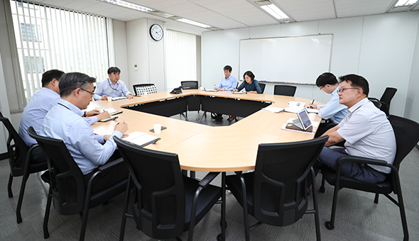

와 제 롤모델이 잡스에요!!! 아이폰 첫 출시되고 나서부터 계속 아이폰 쓰고 있는데 잡스가 너무 그리워요ㅠㅠ 지금은 돈만 벌려고 하는 것 같아서 디자인 발전도 없고ㅠㅠ와 제 롤모델이 잡스에요!!! 아이폰 첫 출시되고 나서부터 계속 아이폰 쓰고 있는데 잡스가 너무 그리워요ㅠㅠ 지금은 돈만 벌려고 하는 것 같아서 디자인 발전도 없고ㅠㅠ와 제 롤모델이 잡스에요!!! 아이폰 첫 출시되고 나서부터 계속 아이폰 쓰고 있는데 잡스가 너무 그리워요ㅠㅠ 지금은 돈만 벌려고 하는 것 같아서 디자인 발전도 없고ㅠㅠ와 제 롤모델이 잡스에요!!! 아이폰 첫 출시되고 나서부터 계속 아이폰 쓰고 있는데 잡스가 너무 그리워요ㅠㅠ 지금은 돈만 벌려고 하는 것 같아서 디자인 발전도 없고ㅠㅠ와 제 롤모델이 잡스에요!!! 아이폰 첫 출시되고 나서부터 계속 아이폰 쓰고 있는데 잡스가 너무 그리워요ㅠㅠ 지금은 돈만 벌려고 하는 것 같아서 디자인 발전도 없고ㅠㅠ
HMM 인사이드 1
북방물류추진 TF
“킥 오프!”
“킥 오프!”
대북제재 해제되면 “황금알 낳는 거위” 기대
나진-하산, 훈춘 물류단지, 북극항로 “경제성 탐색”
나진-하산, 훈춘 물류단지, 북극항로 “경제성 탐색”
글·사진
편집실
남북정상회담, 북미정상회담 개최를 통한 대화분위기는 대북제재 해제로 이어질 것인가? 그렇다면 과연 물류 확대를 통한 비즈니스 기회는 누가 잡게 될 것인가? 지난 3일 연지동 사옥 회의실에서는 북방물류추진 TF 킥오프 회의가 열렸다.

현대상선은 지난 2014년 나진–하산 프로젝트(이하 ‘나진-하산’)의 일환으로 하산으로부터 러시아産 석탄을 3차례에 걸쳐 국내로 반입한 바 있다.
당시 ‘나진-하산’에 직접 참여했던 서백석 부장(컨테이너선대기획팀)은 “나진을 비롯한 북한의 항만은 상황이 썩 좋지는 않지만, 그래서 오히려 우리에게 큰 기회가 될 수 있다고 본다”며 “당시 러시아와 공동투자를 검토하면서, 현지 실사를 몇 차례 다녀왔는데, 앞으로 물류 교류가 본격화될 것에 대비해서 우리가 선제적으로 준비할 필요가 있다”고 언급했다. 이어 “북한의 도로사정이 워낙 열악해서 SOC 기자재를 해외에서 반입할 수 있는 통로는 항만이 최선의 대안이 될 텐데 그 만큼 비즈니스 기회도 많을 것으로 본다”고 강조했다. 참고로 2016년 기준으로 고속도로를 제외한 한국의 도로 포장률이 약 92.4%인데 반해, 북한은 10% 이하인 것으로 알려져 있다.
이어 ‘나진-하산’의 산증인이라고 할 수 있는 박인 부장(벌크전략팀)은 “2014년 당시 나진항에는 14만 톤 분량의 석탄을 집하할 수 있는 야적장이 있었는데, 서시베리아에서 화차로 실어온 석탄을 부두에서 하차하고 야적하는 과정이 가장 큰 애로사항 이었다”며 “철도로 8,000km를 운송해야하는 게 약점이긴 하지만, 8,000kcal/kg의 고열량 석탄(일반 4,000~6,000kcal/kg)이기 때문에 제철소 등에 특별히 필요한 석탄이다. 그래서 시험 품목으로 운송을 했던 것”이라고 덧붙였다.
나진-하산 프로젝트가 북한과 러시아를 연결하는데 반해, 중국과 연결되는 지점이 훈춘 물류단지다. 현대상선은 2013년 그룹과 분리되기 전 포스코그룹과의 공동투자를 통해 150만㎡(45만 평)을 50년간 임차해 개발, 운영하기로 했다. 포스코그룹이 80%지분을, 우리가 170억 원을 투자해 16%의 지분을 갖고 있다. 현재 컨테이너사업개발팀이 실무를 담당하고 있다. 북극항로도 TF의 검토대상이다. 당장은 경제성을 담보할 수 없지만, 앞으로 한-러 정부간 경제협력의 주요한 의제로 떠오를 전망이다.
TF 출범과 관련 유창근 사장은 “대북 종합물류 체계를 구축할 수 있는 경험과 역량을 보유한 국내 유일의 원양국적선사로서 국익과 국가 사업에 우선 기여하는 것이 중요하다”며 “이번 TF로 당장 수익을 올리지는 못하더라도, 대북제재 해제 이후 급박하게 전개될 비즈니스 경쟁에서 우위를 점할 수 있는 바탕을 형성하게 될 것”이라고 강조했다.
북방물류추진 TF는 이용백 대외협력실장이 팀장으로 서백석 부장 박인 부장 서창배 부장(컨테이너사업개발팀) 조성민 부장(대외협력실) 박성철 부장(경영전략팀) 이상민 부장(항만사업관리팀) 박혜령 과장(투자기획팀)이 참여해 활발한 북방물류 비즈니스 모델 개발을 추진한다.
-
최고예요
322
-
좋아요
322
-
슬퍼요
322
-
그저 그래요
322
-
화나요
322